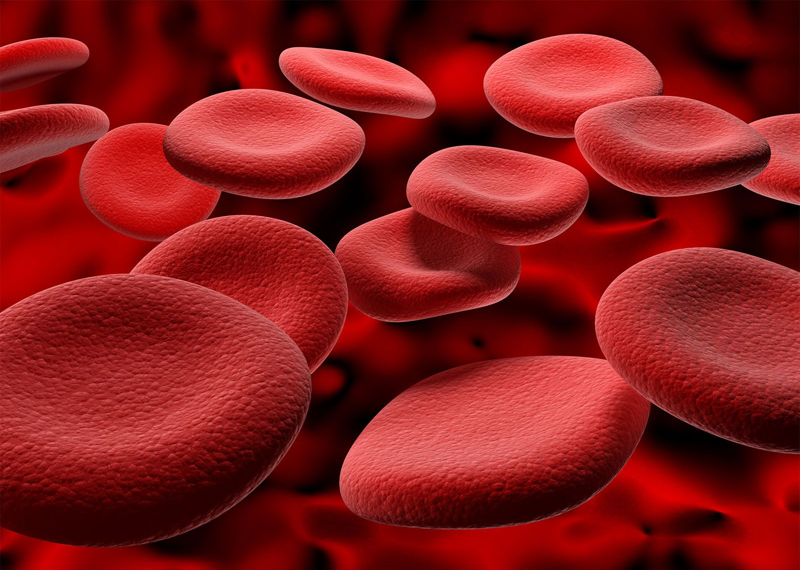
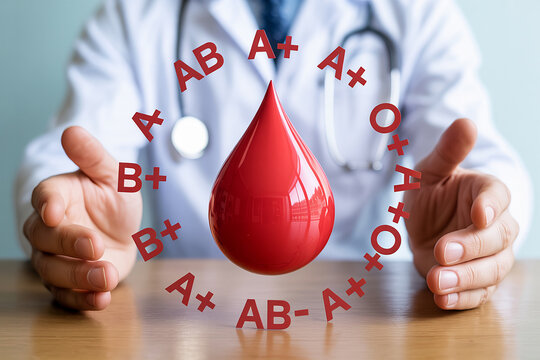

IMMEX @IGG
-

Understanding your blood type is crucial for safe blood transfusion.An incompatible blood can cause serious reactions.
Type Onegative is yhe universal donor for red blood cells.Type AB negetive is the universal donor for plasma.
Types of blood groups
Blood group antibodies may develop naturally or may develop as a result of exposure to foreign RBC antigens during, after previous transfusions or transplants, or as a result of contact with fetal RBCs during or after gestation. According to Shy et al. 2019, the patient's plasma is combined with two or three reagent RBCs of known phenotype that were obtained from donors of type O for the Ab screen in order to prevent interference from naturally existing anti-A or anti-B Abs. This test tries to determine whether the Ab found in the patient's plasma is specific for key RBC Ags and may have clinical relevance.
The ‘naturally occurring’ antibodies of the majority of group A or B individuals are mainly IgM and produced in response to environmental ABO antigens, e.g. from microbes in the gut and respiratory tract.
Most of the group O adults, and a small proportion of group A and B subjects, have naturally occurring, usually weak, IgG in addition to stronger IgM ABO antibodies.
The cord blood usually does not contain ABO antibodies although maternally derived IgG anti-A or -B can sometimes be detected.
However.
the newborn infants do not produce ABO antibodies until the 3rd-6th month of age .
Blood group antibodies may develop naturally or may develop as a result of exposure to foreign RBC antigens during, after previous transfusions or transplants, or as a result of contact with fetal RBCs during or after gestation. According to Shy et al.
2019, the patient's plasma is combined with two or three reagent RBCs of known phenotype that were obtained from donors of type O for the Ab screen in order to prevent interference from naturally existing anti-A or anti-B Abs. This test tries to determine whether the Ab found in the patient's plasma is specific for key RBC Ags and may have clinical relevance.